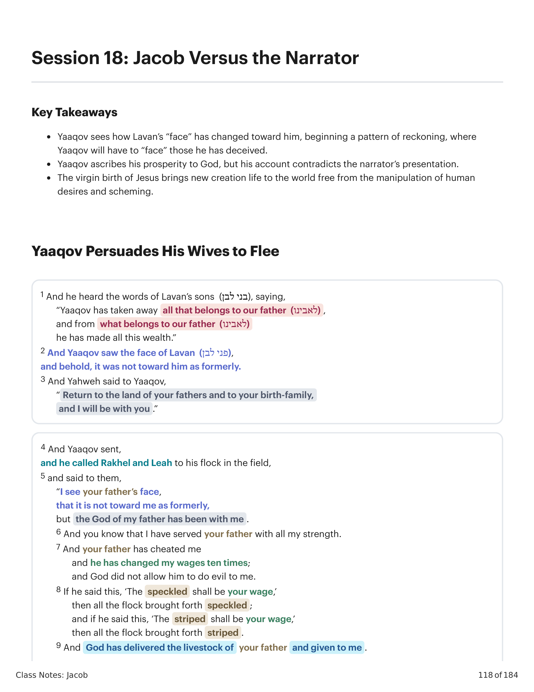
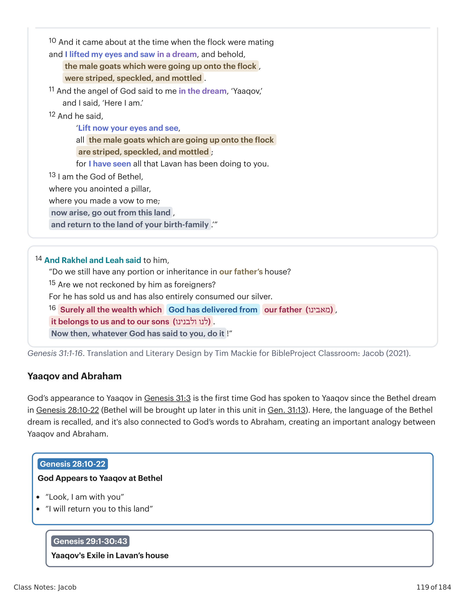

1 E ouviu as palavras dos filhos de Lavan, dizendo: "Yaaqov tem tomado tudo o que era de nosso pai, e do que era de nosso pai fez toda esta riqueza." 2 E Yaaqov viu o rosto de Lavan, e eis que não era para com ele como dantes. 3 E Yahweh disse a Yaaqov: "Volta à terra de teus pais e à tua parentela, e serei contigo." 4 E Yaaqov mandou chamar a Rakhel e a Leah para o seu rebanho no campo, 5 e disse-lhes: "Vejo o rosto de vosso pai, que não é para comigo como dantes, porém o Deus de meu pai tem sido comigo. 6 E vós sabeis que com todas as minhas forças tenho servido a vosso pai. 7 E vosso pai me enganou e mudou o meu salário dez vezes; porém Deus não lhe permitiu que me fizesse mal. 8 Se ele dizia assim: 'Os malhados serão o teu salário', todo o rebanho paria malhados; e se ele dizia assim: 'Os listrados serão o teu salário', todo o rebanho paria listrados. 9 Assim Deus tem tirado o gado de vosso pai e o tem dado a mim. 10 E aconteceu ao tempo em que o rebanho se aquecesse, que levantei os meus olhos e vi em sonho, e eis que os bodes que subiam sobre o rebanho eram listrados, malhados e salpicados. 11 E o anjo de Deus me disse no sonho: 'Yaaqov', e eu disse: 'Eis-me aqui.' 12 E ele disse: 'Levanta agora os teus olhos, e vê: todos os bodes que sobem sobre o rebanho são listrados, malhados e salpicados, porque tenho visto tudo o que Lavan te tem feito. 13 Eu sou o Deus de Betel, onde ungiste uma coluna, onde me fizeste um voto; levanta-te, sai desta terra, e volta à terra da tua parentela.'" 14 E Rakhel e Leah disseram-lhe: "Porventura temos nós ainda parte ou herança na casa de nosso pai? 15 Porventura não somos tidas por estranhas perante ele? Pois vendeu-nos e também tem consumido totalmente a nossa prata. 16 Certamente toda a riqueza que Deus tirou de nosso pai é nossa e de nossos filhos; agora, pois, tudo o que Deus te tem dito, faze-o."1 And he heard the words of Lavan's sons, saying, "Yaaqov has taken away all that belongs to our father, and from what belongs to our father he has made all this wealth." 2 And Yaaqov saw the face of Lavan, and behold, it was not toward him as formerly. 3 And Yahweh said to Yaaqov, "Return to the land of your fathers and to your birth-family, and I will be with you." 4 And Yaaqov sent, and he called Rakhel and Leah to his flock in the field, 5 and said to them, "I see your father's face, that it is not toward me as formerly, but the God of my father has been with me. 6 And you know that I have served your father with all my strength. 7 And your father has cheated me and he has changed my wages ten times; and God did not allow him to do evil to me. 8 If he said this, 'The speckled shall be your wage,' then all the flock brought forth speckled; and if he said this, 'The striped shall be your wage,' then all the flock brought forth striped. 9 And God has delivered the livestock of your father and given to me. 10 And it came about at the time when the flock were mating and I lifted my eyes and saw in a dream, and behold, the male goats which were going up onto the flock, were striped, speckled, and mottled. 11 And the angel of God said to me in the dream, 'Yaaqov,' and I said, 'Here I am.' 12 And he said, 'Lift now your eyes and see, all the male goats which are going up onto the flock are striped, speckled, and mottled; for I have seen all that Lavan has been doing to you. 13 I am the God of Bethel, where you anointed a pillar, where you made a vow to me; now arise, go out from this land, and return to the land of your birth-family.'" 14 And Rakhel and Leah said to him, "Do we still have any portion or inheritance in our father's house? 15 Are we not reckoned by him as foreigners? For he has sold us and has also entirely consumed our silver. 16 Surely all the wealth which God has delivered from our father, it belongs to us and to our sons. Now then, whatever God has said to you, do it!"

Gênesis 31:1-16. Tradução e Design Literário por Tim Mackie para BibleProject Classroom: Jacó (2021).Genesis 31:1-16. Translation and Literary Design by Tim Mackie for BibleProject Classroom: Jacob (2021).
A aparição de Deus a Yaaqov em Gênesis 31:3 é a primeira vez que Deus fala com Yaaqov desde o sonho de Betel em Gênesis 28:10-22 (Betel será retomado mais tarde nesta unidade em Gn 31:13). Aqui, a linguagem do sonho de Betel é recordada, e também é conectada às palavras de Deus a Abraão, criando uma analogia importante entre Yaaqov e Abraão. A palavra "parentela" (moledet) é a mesma palavra-chave que Deus usou ao dirigir-se a Abraão e mandar que deixasse este mesmo lugar, Kharan, e fosse para a terra de Canaã. Contudo, em Gênesis 24, quando Abraão envia seu servo à "terra da minha parentela", isso se refere a Kharan, onde Yaaqov tem sido exilado. Agora, nos 20 anos do exílio de Yaaqov, a situação se inverteu. Canaã é a "terra da tua parentela" para Yaaqov, e assim agora se torna a base para a qual ele deve retornar. Yaaqov, o neto de Abraão e herdeiro da promessa e bênção, agora é o novo "Adão/Abraão".God's appearance to Yaaqov in Genesis 31:3 is the first time God has spoken to Yaaqov since the Bethel dream in Genesis 28:10-22 (Bethel will be brought up later in this unit in Gen. 31:13). Here, the language of the Bethel dream is recalled, and it's also connected to God's words to Abraham, creating an important analogy between Yaaqov and Abraham. The word "birth-family" (Heb. moledet) is the same key word God used when he addressed Abraham and told him to leave this exact same place, Kharan, and go to the land of Canaan. Yet in Genesis 24, when Abraham sends his servant to "the land of my birth family," this refers to Kharan, where Yaaqov has been exiled. Now, in the 20 years of Yaaqov's exile, the situation has reversed. Canaan is the "land of your birth-family" for Yaaqov, and so now becomes the home-base to which he must return. Yaaqov, the grandson of Abraham and the inheritor of the promise and blessing, is now the new "Adam/Abraham."

Gênesis 28:10-31:16. Tradução e Design Literário por Tim Mackie para BibleProject Classroom: Jacó (2021).Genesis 28:10-31:16. Translation and Literary Design by Tim Mackie for BibleProject Classroom: Jacob (2021).
O discurso de Yaaqov a suas esposas é curioso de muitas formas. Ele relata o fato de Yahweh lhe ter aparecido, convocando-o a retornar à sua terra natal. Mas quando relata a história do engano de Lavan e a criação dos rebanhos, ele oferece um relato que difere daquele dado pelo narrador em Gênesis 30. O gráfico comparativo abaixo mostra as diferenças. A versão de Yaaqov constantemente distorce os detalhes em seu favor, e dá a sensação de que ele está manipulando a história para persuadir suas esposas e assegurar o desfecho desejado.Yaaqov's speech to his wives is curious in many ways. He recounts the fact that Yahweh appeared to him, summoning him to return to his homeland. But when he recounts the story of Lavan's deception and the breeding of the flocks, he offers a report that differs from the one given by the narrator in Genesis 30. The comparison chart below shows the differences. Yaaqov's version consistently skews the details in his favor, and gives the feeling that he is manipulating the story to persuade his wives and secure his desired outcome.
| Discurso de Yaaqov em Gênesis 31:4-13Yaaqov’s Speech in Genesis 31:4-13 | As Narrativas Referidas em Gênesis 30-31The Narratives Referred to in Genesis 30-31 | |||||||
|---|---|---|---|---|---|---|---|---|
| Gn 31:4-5 E Yaaqov mandou chamar Rakhel e Leah ao seu rebanho no campo, e disse-lhes: “Vejo o rosto de vosso pai,Gen. 31:4-5 And Yaaqov sent and called Rakhel and Leah to his flock in the field, and said to them, “I see your father’s face, | Gn 31:3 Retorna à terra de teus pais e à tua família, e eu estarei contigo.Gen. 31:3 Return to the land of your fathers and to your family, and I will be with you. | |||||||
| O Discurso de Yaaqov em Gênesis 31. Criado por Tim Mackie para BibleProject Classroom: Jacó (2021).Yaaqov’s Speech in Genesis 31. Created by Tim Mackie for BibleProject Classroom: Jacob (2021). | ||||||||
| Discurso de Yaaqov em Gênesis 31:4-13Yaaqov’s Speech in Genesis 31:4-13 | As Narrativas Referidas em Gênesis 30-31The Narratives Referred to in Genesis 30-31 | |||||||
|---|---|---|---|---|---|---|---|---|
| que ele não é para comigo como antes, mas o Deus de meu pai tem estado comigo.”that it is not toward me as formerly, but the God of my father has been with me.” | ||||||||
| Gn 31:6-7 E vós sabeis que servi vosso pai com todas as minhas forças. E vosso pai me enganou e mudou meu salário dez vezes; e Deus não lhe permitiu fazer-me mal.Gen. 31:6-7 And you know that I have served your father with all my strength. And your father has cheated me and changed my wages ten times; and God did not allow him to do evil to me. | Gn 29:15 Acaso não és meu irmão? Deverias servir-me de graça? Dize-me, qual é o teu salário?Gen. 29:15 Aren’t you my brother? Should you serve me for nothing? Tell me, what is your wage? | |||||||
| Gn 31:8-9 Se [Lavan] dizia assim: “Os salpicados serão teu salário”, então todo o rebanho dava à luz salpicados; e se [Lavan] dizia assim: “Os listrados serão teu salário”, então todo o rebanho dava à luz listrados. E Deus entregou o gado de vosso pai e o deu a mim.Gen. 31:8-9 If [Lavan] said this, “The speckled shall be your wages,” then all the flock brought forth speckled; and if [Lavan] said this, “The striped shall be your wages,” then all the flock brought forth striped. And God has delivered your father’s livestock and given to me. | Gn 30:32 Passarei hoje por todo o teu rebanho, separando dele todo cordeiro salpicado e malhado ... e isso será meu salário. Gn 30:34 E Lavan disse: “Que seja conforme a tua palavra.” Gn 30:39 E o rebanho deu à luz listrados, salpicados e malhados.Gen. 30:32 I will pass through your flock today, removing every lamb that is speckled and spotted ... and it will be my wage. Gen. 30:34 And Lavan said, “Let it be according to your word.” Gen. 30:39 And the flock birthed striped, speckled, and spotted. | |||||||
| Gn 31:10-12 E aconteceu no tempo em que o rebanho estava se acasalando, e levantei meus olhos e vi em um sonho, e eis que os bodes que subiam sobre o rebanho eram listrados, salpicados e mosqueados. E o anjo de Deus me disse no sonho: “Yaaqov”, e eu disse: “Eis-me aqui.” E ele disse: “Levanta agora teus olhos e vê, todos os bodes que sobem sobre o rebanho são listrados, salpicados e mosqueados; pois eu vi tudo o que Lavan tem feito contigo.”Gen. 31:10-12 And it came about at the time when the flock were mating, and I lifted my eyes and saw in a dream, and behold, the male goats which were going onto the flock, the striped, speckled, and mottled. And the angel of God said to me in the dream, “Yaaqov,” and I said, “Here I am.” And he said, “Lift now your eyes and see, all the male goats which are going up onto the flock are striped, speckled, and mottled; for I have seen all that Lavan has been doing to you.” | Gn 30:37-42 E Yaaqov tomou varas verdes de álamo, amendoeira e plátano, e descascou nelas listras brancas, expondo o branco das varas. E colocou as varas que havia descascado diante do rebanho, nos bebedouros, onde os rebanhos vinham beber; e eles se acasalavam quando vinham beber. E os rebanhos se acasalavam diante das varas, e davam à luz listrados, salpicados e malhados ... E acontecia que, sempre que as mais fortes do rebanho se acasalavam, Yaaqov punha as varas à vista do rebanho nos bebedouros, para que se acasalassem junto às varas; mas quando o rebanho era fraco, ele não as punha; e as fracas eram de Lavan e as fortes eram de Yaaqov.Gen. 30:37-42 And Yaaqov took rods of fresh poplar and almond and plane trees, and he peeled white stripes in them, exposing the white on the rods. And he placed the rods which he had peeled in front of the flock, in the troughs, in the watering troughs, where the flocks came to drink; and they mated when they came to drink. And the flocks mated with/upon the rods, and the flocks gave birth to striped, speckled, and spotted ... And it came about in all the mating of the strong ones of the flock, Yaaqov would set the rods in the sight of the flock in the troughs, so that they would mate by the rods; and when the flock was weak, he did not set them, and the weak ones belonged to Lavan and the strong ones belonged to Yaaqov. | |||||||
| O Discurso de Yaaqov em Gênesis 31. Criado por Tim Mackie para BibleProject Classroom: Jacó (2021).Yaaqov’s Speech in Genesis 31. Created by Tim Mackie for BibleProject Classroom: Jacob (2021). | ||||||||
| Discurso de Yaaqov em Gênesis 31:4-13Yaaqov’s Speech in Genesis 31:4-13 | As Narrativas Referidas em Gênesis 30-31The Narratives Referred to in Genesis 30-31 | |||||||
|---|---|---|---|---|---|---|---|---|
| Gn 31:13 Eu sou o Deus de Betel, onde ungiste uma coluna, onde me fizeste um voto;Gen. 31:13 I am the God of Bethel, where you anointed a pillar, where you made a vow to me; | Referência a Gn 28:10-22Reference back to Gen. 28:10-22 | |||||||
| Gn 31:13 ... agora levanta-te, sai desta terra e retorna à terra de teu nascimento.Gen. 31:13 ... now arise, go out this land, and return to the land of your birth. | Gn 31:3 Retorna à terra de teus pais e à tua família, e eu estarei contigo.Gen. 31:3 Return to the land of your fathers and to your family, and I will be with you. | |||||||
| O Discurso de Yaaqov em Gênesis 31. Criado por Tim Mackie para BibleProject Classroom: Jacó (2021).Yaaqov’s Speech in Genesis 31. Created by Tim Mackie for BibleProject Classroom: Jacob (2021). | ||||||||
Observe como o discurso de Yaaqov abre e fecha em Gênesis 31:5 e 31:13 com citações adaptadas de cada parte do discurso divino de Gênesis 31:3. A parte central do discurso é um resumo abreviado das interações de Yaaqov e Lavan em Gênesis 29-30. O relato do sonho de Yaaqov, contudo, difere significativamente da narrativa em 30:30-42. Yaaqov apresenta o acasalamento dos rebanhos como acontecendo completamente sob a direção de Deus (como os animais de Noá entrando e saindo da arca). Yaaqov omite todas as menções de sua manipulação do rebanho com varas de acasalamento falsas. Yaaqov também omite qualquer referência à sua criação seletiva, como ele colocava as varas junto aos fortes do rebanho para que os animais de Lavan ficassem mais fracos com o tempo. Embora sutil, isso parece ser uma estratégia narrativa para retratar o relato do sonho de Yaaqov como não confiável. Embora seja verdade que Deus lhe falou em Betel e o convocou de volta a Canaã, sua representação do que aconteceu com os rebanhos do pai é retratada como mais um ato de manipulação, desta vez para persuadir as filhas de Lavan a voltarem com ele a Canaã. Em contraste com o servo de Abraão em Gênesis 24, que confiou em Deus e deixou Rivqah fazer sua própria escolha de voltar com ele a Canaã, aqui Yaaqov manipula suas esposas torcendo a história de sua manipulação dos rebanhos de Lavan. Mais uma vez, Yaaqov não confia nas palavras de Deus em Gênesis 31:3 ("Serei contigo"), e tramou seu próprio caminho para realizar a bênção e a promessa divinas.Notice how Yaaqov's speech opens and closes in Genesis 31:5 and 31:13 with adapted quotations of each part of the divine speech from Genesis 31:3. The center part of the speech is an abbreviated summary of Yaaqov and Lavan's interactions from Genesis 29-30. The report of Yaaqov's dream, however, differs significantly from the narrative in 30:30-42. Yaaqov presents the mating of the flocks as happening completely under God's direction (like Noah's animals getting on and off the ark). Yaaqov omits all mentions of his manipulation of the flock with fake mating rods. Yaaqov also omits any reference to his selective breeding, how he would place the rods by the strong of the flock so that Lavan's animals would get weaker over time. While subtle, this seems to be a narrative strategy to portray Yaaqov's dream report as unreliable. While it is true that God spoke to him at Bethel and summoned him back to Canaan, his representation of what happened with their father's flocks is portrayed as yet another act of manipulation, this time to persuade Lavan's daughters to come with him back to Canaan. In contrast to Abraham's servant in Genesis 24, who trusted God and let Rivqah make her own choice to come back to Canaan with him, here Yaaqov manipulates his wives by twisting the story of his manipulation of Lavan's flocks. Once again, Yaaqov doesn't trust God's words in Genesis 31:3 ("I will be with you"), and he schemes his own way to realize the divine blessing and promise.
O discurso de Yaaqov e a resposta de Rakhel e Leah em Gênesis 31:5-16 é um resumo sofisticado dos capítulos 29-30, entrelaçado com padrões de design maiores em Gênesis. Gênesis 31:8-9 resume o engano do acasalamento de ovelhas que Yaaqov realizou em Gênesis 30:25-43. Gênesis 31:10-12 liga o engano de Yaaqov a um sonho semelhante ao seu sonho-visão de Betel em Gênesis 28:10-22, mas este sonho é especificamente modelado sobre a 'aqedah de Gênesis 22. Yaaqov "levanta seus olhos" durante um sonho sobre seu engano de Lavan, em contraste com a cena onde Abraão está prestes a sacrificar Yitskhaq e o "anjo de Yahweh" chama e ele responde "eis-me aqui" e "levanta seus olhos" e vê um carneiro preso no matagal (Gn 22:12-13). Aqui descobrimos que Deus permitiu a traição de Yaaqov (o oposto da fidelidade de Abraão) para criar frutificação, embora isso contraste com a fidelidade de Abraão que resultou em frutificação. Em Gênesis 31:10-11, o vocabulário do sonho de Yaaqov ecoa seu sonho anterior em Gênesis 28:10-22: ele olha para cima e vê bodes "subindo" e "malhados", um trocadilho com "o que desce" em Gn 28:10-22. Gênesis 31:13 é uma referência de volta ao voto de Yaaqov em Betel em Gênesis 28:20, e é uma ligação de volta ao início deste episódio (Gn 31:3), que é a ordem de Deus para que Yaaqov deixe Kharan, lançada em linguagem idêntica à ordem de Deus para que Abraão deixasse Kharan e fosse a Canaã (Gn 12:1). Em Gênesis 31:14-15, a resposta de Rakhel e Leah recorda o engano de Yaaqov a Esaú. "Ainda temos parte e herança na casa de nosso pai?" Isso recorda a pele "lisa" (khalak) de Yaaqov que lhe permitiu fraudar Esaú de sua herança. Sua descrição de Lavan "vendendo" e "comendo" a herança de suas filhas recorda o comportamento de Esaú na mesma história, onde ele "vende" seu direito de primogenitura para "comer" uma tigela de lentilhas (Gn 25:33).Yaaqov's speech and Rakhel and Leah's response in Genesis 31:5-16 is a sophisticated summary of chapters 29-30, which has been interwoven with larger design patterns in Genesis. Genesis 31:8-9 summarizes the sheep-mating deception Yaaqov performed in Genesis 30:25-43. Genesis 31:10-12 links Yaaqov's deception to a dream that is similar to his Bethel dream-vision in Genesis 28:10-22, but this dream is specifically patterned after the 'aqedah of Genesis 22. Yaaqov "lifts his eyes" during a dream about his deception of Lavan, in contrast to the scene where Abraham is about to sacrifice Yitskhaq and the "angel of Yahweh" calls out and he responds "here I am" and he "lifts his eyes" and sees a ram caught in the thicket (Gen. 22:12-13). Here we discover that God allowed Yaaqov's treachery (the opposite of Abraham's faithfulness) to create fruitfulness, even though it contrasts with Abraham's faithfulness that resulted in fruitfulness. In Genesis 31:10-11, the vocabulary of Yaaqov's dream echoes his earlier dream in Genesis 28:10-22: He looks up and see goats "going up" and "speckled," a pun on "the one going down" in Gen. 28:10-22. Genesis 31:13 is a reference back to Yaaqov's vow at Bethel back in Genesis 28:20, and it's a link back to the beginning of this episode (Gen. 31:3), which is God's command that Yaaqov leave Kharan, cast in language identical to God's command that Abraham leave Kharan and go to Canaan (Gen. 12:1). In Genesis 31:14-15, Rakhel and Leah's response recalls Yaaqov's deception of Esau. "Do we still have a share and inheritance in the house of our father?" This recalls Yaaqov's smooth (khalak) skin that allowed him to swindle Esau of his inheritance. Their description of Lavan's "selling" and "eating" his daughters inheritance recalls Esau's behavior in the same story, where he "sells" his birthright to "eat" a bowl of lentils (Gen. 25:33).
Quais são duas maneiras pelas quais poderíamos ler o relato de Yaaqov de sua prosperidade com os rebanhos? Como podemos discernir o significado desta história?What are two ways we could read Yaaqov's account of his prosperity with the flocks? How can we discern the meaning of this story?